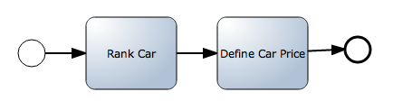
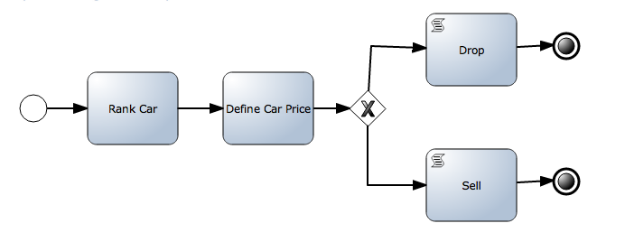
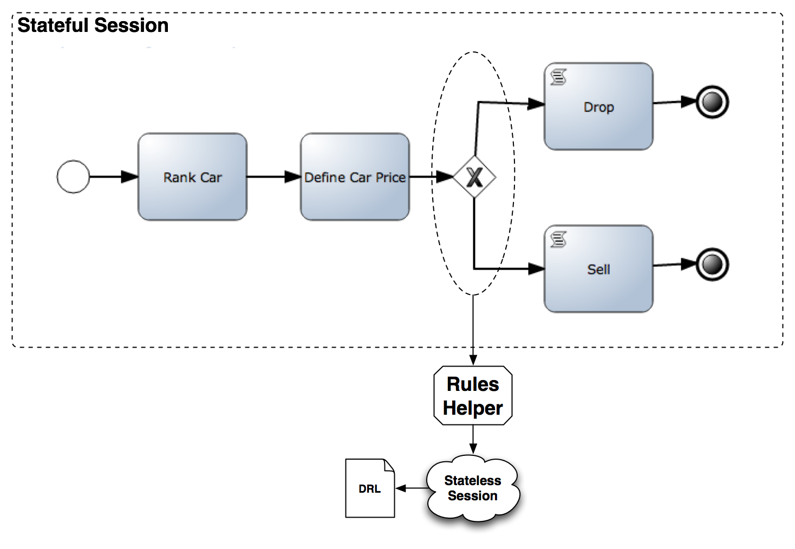
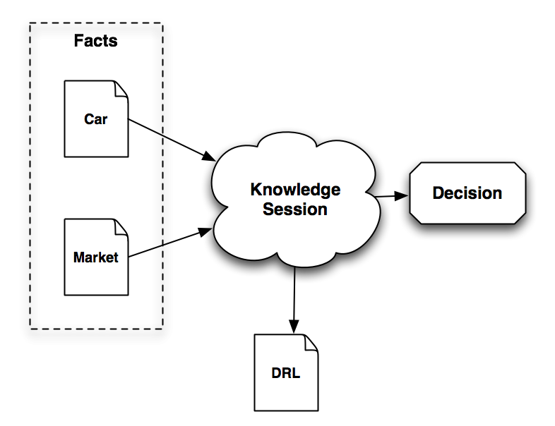

(PROCESSES & RULES) OR (RULES & PROCESSES) 2/X
I’m back! In my previous post I’ve introduced a couple of patterns about how to mix processes and rules and viceversa. This post, before jumping into more advanced topics which requires to know how the Rule Engine works, will explain with some examples how we can interact with the Rule Engine using stateless sessions . This examples can be used to compare how most of the BPMS out there used to work with Rule Engines. At the end of the post you can find an example about how to solve the same scenario presented in the example just using Rules.
Introduction
The main focus of this post is to describe the common ways of defining stateless interactions against the Rule Engine. As I mentioned in my previous post, this is how BPMS were doing the interactions from the last 20 years. After this post everything will be about Stateful Sessions. For that reason, the second half of this post analyze how we can start translating these kind of models to leverage the power of the Rule Engine.
The classic examples of the Decision Points Pattern and the Data Validations/Enrichments Task Pattern were quickly introduced in my previous post. So let’s take a look at some examples which shows some common modeling decisions that we made for representing our business situations.
Data Validation/ Enrichment Task Pattern
The first example looks like this:

- Car Ranking Process
Let’s start simple with a couple of Task which can be resolved using the Data Validations/Enrichments Task Pattern. This means that for both tasks we will need to contact the Rule Engine in order to Rank a Car and then another set of Rules will be in charge of Define the Car Price based on the Ranking and some other business definitions, that could be the current state of the Car market.
The ultimate objective of this process is to put the best price possible for the company that wants to sell the car. A process like this can be used to quickly react on Market changes, so for example if the company in charge of selling 3 different brands of car, know that there is a high demand of an specific brand because of the Olympic Games, they can quickly tune the system to influence the Ranking and Pricing logic.
If you want to run this process in any other BPMS you will need to know the Rule Engine APIs and find a way to call them. If you want to copy exactly the same behavior in jBPM5 you will need to use WorkItemHandler which internally use a Stateless Session to do the Evaluations. So for running this example you will need to do something like the following figure:
- Stateless Interactions
No matter the process engine you will end up doing something similar. An example about this can be found here:
The RankCarWorkItemHandler can be found here: https://github.com/Salaboy/jBPM5-Developer-Guide/blob/master/chapter_09/jBPM5-Process-Rules-Patterns/src/main/java/com/salaboy/jbpm5/RankCarWorkItemHandler.java
And the rules used inside the Stateless Session can be found here: https://github.com/Salaboy/jBPM5-Developer-Guide/blob/master/chapter_09/jBPM5-Process-Rules-Patterns/src/main/resources/car-ranking-rules.drl
The rules of this example are not complex to keep the example small and as simple as possible.
Some characteristics of this example that you must know:
- The Process runs inside a Stateful Session and we create two Stateless Sessions for doing the Ranking and Pricing evaluations. We need to move information around the different sessions, we need to instantiate them and we are compiling the rules each time that an evaluation is required.
- We are creating a lot of artifacts that we need to maintain:
- 2 DRL Files
- 2 WorkItemHandlers
- 1 BPMN2 Process file
Decision Points Patterns
For this example, let’s imagine that once we define the Price of a particular car we (as a company) will define if we will accept the car from our providers or if we will reject it because we will not be able to sell that particular car:

- Decision Point
There are several ways of defining the business conditions which will dictate if we better leave this car or if we will accept it to sell it to our customers.
A common practice is to define the restrictions in the gateway’s outgoing Sequence Flows based on the process variables. We can say something like:
- If the calculated price is less than 15000 we will drop the offer
- If the calculated price is greater than 15000 we will pick the car from our provider to sell it to our customers
This can easily be translated to a Java sentence which evaluate the “car” process variable:
<br /><br />(return (car.getCurrentPrice() < 15000);<br /><br />You can check the source code for this example here: https://github.com/Salaboy/jBPM5-Developer-Guide/blob/master/chapter_09/jBPM5-Process-Rules-Patterns/src/test/java/com/salaboy/jbpm5/OldIntegrationPatterns.java#L129And the process file here: https://github.com/Salaboy/jBPM5-Developer-Guide/blob/master/chapter_09/jBPM5-Process-Rules-Patterns/src/main/resources/process-stateless-rule-evaluation-java-gateway.bpmnThis is OK for simple hello world examples, but when we have a real business situation this evaluation becomes really complex, and more if they are based on external services.So, we have another alternative, once again using a Stateless Session:

- Stateless Decision Point
If we have more complex business conditions, we can once again use Rules to keep that logic decoupled from the business process in a declarative way.If you take a look at this example, it also shows how you can plug external services into the decision logic.Check the source code for this example here: https://github.com/Salaboy/jBPM5-Developer-Guide/blob/master/chapter_09/jBPM5-Process-Rules-Patterns/src/test/java/com/salaboy/jbpm5/OldIntegrationPatterns.java#L170You can find the RulesHelper here, it’s a very simple implementation but it shows the basic concepts: https://github.com/Salaboy/jBPM5-Developer-Guide/blob/master/chapter_09/jBPM5-Process-Rules-Patterns/src/main/java/com/salaboy/jbpm5/RulesHelper.javaSome characteristics of these examples:
- We are sequencing decisions that doesn’t require to be sequenced, we can use the power of the Rule Engine to make all this automated decisions for us.
- Creating multiple sessions we are defining new scopes to handle different pieces of information, but the information that all those sessions handle needs to be moved from one context to the other.
- We should try as much as we can to keep the business logic decoupled from our business process model
- As long as we don’t have external interactions such as Human Interactions or External System Interactions, we should keep our processes as simple as possible and we will need to analyze if for simple situations we required a business process definition or we can just use Business Rules for do the tasks.
The Rule Engine Way
If you are already a Rule Engine user, you probably notice that all the previous examples can be written using only rules, because there is no need for coordination. The whole point of the previous examples was making a business decision, which can be easily translated to a set of Rules. We can collapse all the logic represented by the processes and rules previously introduced into just a set of rules which will now when to evaluate the information that we are providing.

- The Rule Engine Way
We insert facts, and we end up with a Decision which is valuable for the company.
Notice that we are covering the same requirements that were introduced in the previous examples, but just using rules.
The whole point of this section is to show how we can switch from one Process Oriented Perspective to a Rule Driven Perspective to solve the same kind of scenarios. Knowing all the tools and approaches we will be able to design more flexible solutions choosing the best approach based on the requirements that you have.
You can find a source code for this examples here: https://github.com/Salaboy/jBPM5-Developer-Guide/blob/master/chapter_09/jBPM5-Process-Rules-Patterns/src/test/java/com/salaboy/jbpm5/OldIntegrationPatterns.java#L196
I’ve collapsed all the rules that were used in the previous examples in just one DRL file and I’ve added some modifications for them to work together. Rules: https://github.com/Salaboy/jBPM5-Developer-Guide/blob/master/chapter_09/jBPM5-Process-Rules-Patterns/src/main/resources/car-evaluations.drl
At this point is important for you to recognize, that I’m not suggesting that we can drop the process engine and do everything with rules. When we have this kind of scenarios which doesn’t involve Human Interactions or Asynchronous interactions with external systems, we can evaluate if we really need a process definition or we are just trying to make a decision which can be solved by rules only. Most of the time, users who only know the Process Oriented way of solving things ends up with extremely complicated process diagrams to solve things that can be quickly summarized in rules.
Summary
On this post we spend some time looking at some examples of the previously introduced Patterns: Data Decoration/Enrichment Task and Decision Points patterns. All the examples from this post show the usage of Stateless Sessions to make One-Shot data decorations or decisions, but at the end of the post we analyze how we can solve the same scenarios using the declarative power of the Rule Engine.
On my following posts we will continue analyzing more advanced patterns that uses Rules to simplify business processes that tends to become more complex when we start adding too much business logic on top of them.

{kind=link}
{kind=link}
{kind=link}
{kind=link}
{kind=link}